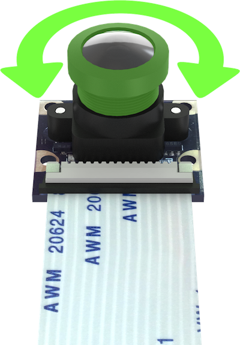
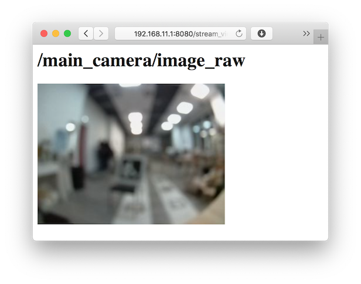
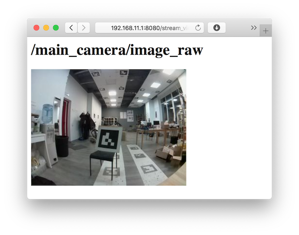
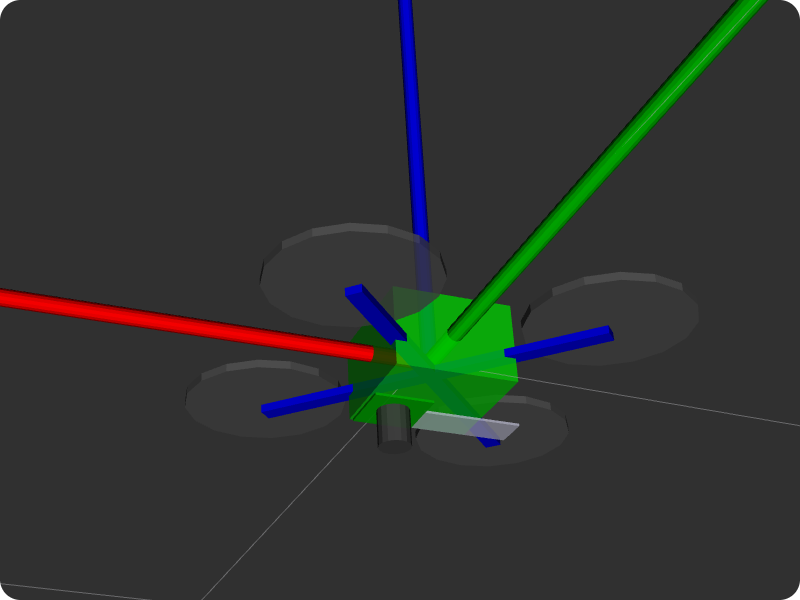
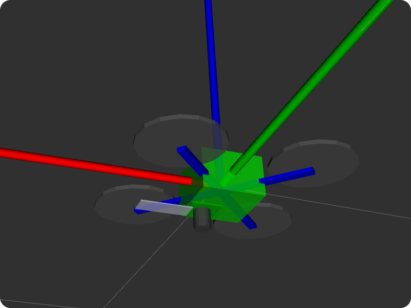
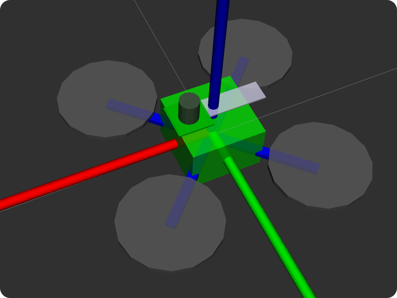
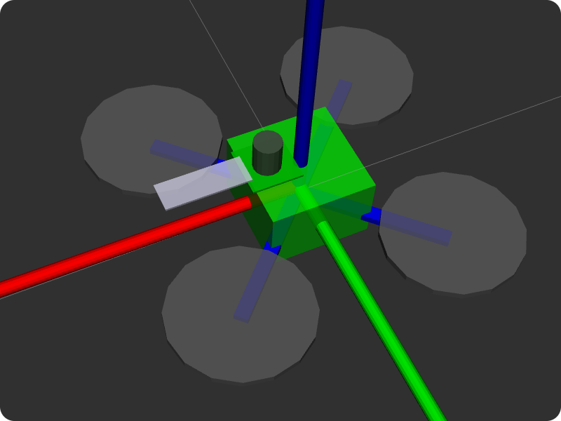

Настройка камеры
Для корректной работы всех функций, связанных с компьютерным зрением (в том числе полета по ArUco-маркерам и Optical Flow) необходимо сфокусировать основную камеру, а также выставить ее расположение и ориентацию. Улучшить качество работы также может опциональная калибровка камеры.
Настройка фокуса камеры
Для успешного осуществления полетов с использованием камеры, необходимо настроить фокус камеры.

- Откройте трансляцию изображения с камеры используя web_video_server.
- С помощью вращения объектива камеры добейтесь максимальной резкости деталей (предпочтительно на расстоянии предполагаемой высоты полета – 2–3 м).
| Расфокусированное изображение | Сфокусированное изображение |
|---|---|
 |
 |
Настройка расположения камеры
Расположение и ориентация камеры задается в файле ~/technic_ws/src/technic/technic/launch/main_camera.launch:
<arg name="direction_z" default="down"/> <!-- direction the camera points: down, up -->
<arg name="direction_y" default="backward"/> <!-- direction the camera cable points: backward, forward -->
Для того, чтобы задать ориентацию, необходимо установить:
- направление обзора камеры
direction_z: вниз (down) или вверх (up); - направление, в которое указывает шлейф камеры
direction_y: назад (backward) или вперед (forward).
Примеры
Камера направлена вниз, шлейф назад
<arg name="direction_z" default="down"/>
<arg name="direction_y" default="backward"/>


Камера направлена вниз, шлейф вперёд
<arg name="direction_z" default="down"/>
<arg name="direction_y" default="forward"/>

Камера направлена вверх, шлейф назад
<arg name="direction_z" default="up"/>
<arg name="direction_y" default="backward"/>


Камера направлена вверх, шлейф вперёд
<arg name="direction_z" default="up"/>
<arg name="direction_y" default="forward"/>

Подсказка Утилита
selfcheck.pyвыдает словесное описание установленной в данной момент ориентации основной камеры.
Произвольное расположение камеры
Также возможны произвольное расположение и ориентация камеры. Для этого раскомментируйте запуск ноды, подписанной как Template for custom camera orientation:
<!-- Template for custom camera orientation -->
<!-- Camera position and orientation are represented by base_link -> main_camera_optical transform -->
<!-- static_transform_publisher arguments: x y z yaw pitch roll frame_id child_frame_id -->
<node pkg="tf2_ros" type="static_transform_publisher" name="main_camera_frame" args="0.05 0 -0.07 -1.5707963 0 3.1415926 base_link main_camera_optical"/>
Эта строка задает статическую трансформацию между фреймом base_link (соответствует корпусу полетного контроллера) и камерой (main_camera_optical) в формате:
сдвиг_x сдвиг_y сдвиг_z угол_рысканье угол_тангаж угол_крен
Фрейм камеры задается таким образом, что:
- x указывает направо на изображении;
- y указывает вниз на изображении;
- z указывает от плоскости матрицы камеры.
Сдвиги задаются в метрах, углы задаются в радианах. Корректность установленной трансформации может быть проверена с использованием rviz.
Калибровка
Для улучшения качества работы алгоритмов также рекомендуется произвести калибровку камеры.